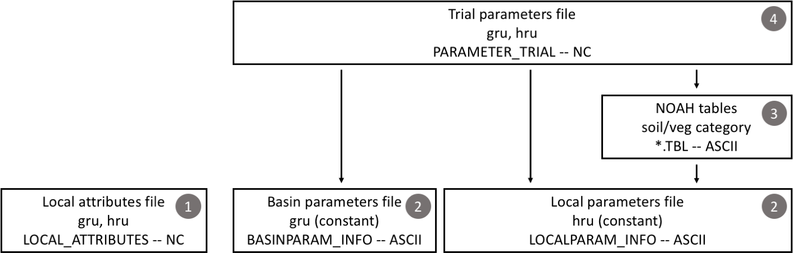

SUMMA Input Files
SUMMA has a large number of input files that configure the model and provide the necessary initial conditions and time-varying boundary conditions to make a model simulation. This can at times be confusing. We encourage the user to look at the SUMMA test cases, which provide working SUMMA setups.
Input file formats
SUMMA input files are either ASCII format or NetCDF. The general characteristics of these files are described in the next two subsections, while the contents of the individual input files are described after that.
ASCII
ASCII or text files are in a format that can be modified using a text editor. Comments can be added to any SUMMA text file by starting the comments with a !. Anything after the ! will be discarded till the end of the line. You can include as many comments as you want, as they will be stripped as SUMMA processes the file.
NetCDF
NetCDF or Network Common Data Format is a file format that is widely used in geosciences to organize large data sets. The main advantages of using NetCDF files is that they are machine independent, they allow the user to include meta data directly in the data file, and they can be read by, visualized and analyzed using a large number of freely available software packages. The SUMMA documentation is not the place to learn about NetCDF. We assume that you know the difference between NetCDF dimensions, NetCDF variables, and NetCDF attributes (global and local). If you don't, then there are many tutorials available online. Note that NetCDF attributes are different from the local SUMMA attributes that we are describing below.
SUMMA input files in NetCDF format can include variables (and dimensions) other than those specified below. They will simply not be read by SUMMA, but may be useful to facilitate further analysis and/or visualization. For example, it may be convenient to include latitude and longitude in many of the spatial files to allow visualization.
Note on GRU and HRU order in NetCDF files
SUMMA makes certain assumptions about GRU and HRU order in its input files, as determined in the gruId and hruId variables in these files. SUMMA expects the gruId and hruId variables to have identical orders in the forcing, attributes, coldState and trialParameter .nc files. Note that this is unrelated to the actual values of the gruId and hruId variables. In cases where each GRU contains exactly one HRU, no action is needed beyond ensuring that these files use the same order of IDs. In cases where a GRU contains multiple HRUs, SUMMA additionally expects that the HRUs inside a given GRU are found at subsequent indices in each NetCDF file (see table for an example of correct [left] and incorrect [right] order specification; gruId and hruId values set at arbitrary values to emphasize it is the order that matters, not the values themselves).
| Index in file | gruId | hruId | < correct incorrect > |
gruId | hruId |
|---|---|---|---|---|---|
| 1 | 10 | 100 | 10 | 100 | |
| 2 | 10 | 300 | 20 | 200 | |
| 3 | 20 | 200 | 10 | 300 | |
| 4 | 20 | 400 | 20 | 400 |
Master configuration file
The master configuration file is an ASCII file and is provided to SUMMA at run-time as a command-line option. The path to this file needs to be supplied with the -m or --master command-line flag. The contents of this file orchestrate the remainder of the SUMMA run and are processed by the code in build/source/hookup/summaFileManager.f90. The file contents mostly consist of file paths that provide the actual information about the model configuration. It also contains the run period and forcing time zone information.
The following items must be provided in the master configuration file. Order is not important, as the entries are each associated with a keyword. Each keyword and entry pair must be on its own line, but may be followed by a comment (started by the '!' character), and you can add lines of comments between the items. Each entry must be enclosed in single quotes 'entry'. The associations of the keywords to the actual variable name that is used in the SUMMA source code can be found in summaFileManager.f90, along with its default value where appropriate.
controlVersion: Version of the file manager that should be used to process the master configuration file. At this time, this string should be equal to'SUMMA_FILE_MANAGER_V3.0.0'. Note, this version of the code is not backward compatible with versions using'SUMMA_FILE_MANAGER_V1.0'or'SUMMA_FILE_MANAGER_V2.0'.simStartTime: Start of the simulation specified as'YYYY-MM-DD hh:mm'. See Time definition notes.simEndTime: End of the simulation specified as'YYYY-MM-DD hh:mm'.tmZoneInfo: Time zone information.settingsPath: Base path for the configuration files. Most of the file paths in the remainder of the master configuration file are relative to this path (exceptforcingPathandoutputPath).forcingPath: Base path for the meteorological forcing files specified in theforcingList.outputPath: Base path for the SUMMA output files.statePath: (optional) Base path for the SUMMA state files, including the initial condition file. If not given, the initial condition (state) file is read from the settingsPath directory, and the state file outputs are written to the outputPath directory. If given, summa expects the initial condition file to be in the state file directory.decisionsFile: File path for the model decisions file (relative tosettingsPath).outputControlFile: File path for the output control file (relative tosettingsPath).attributeFile: File path for the local attributes file (relative tosettingsPath).globalHruParamFile: File path for the local parameters file (relative tosettingsPath).globalGruParamFile: File path for the basin parameters file (relative tosettingsPath).forcingListFile: File path for the list of forcing files file (relative tosettingsPath).initConditionFile: File path for the initial conditions file (relative tosettingsPath).trialParamFile: File path for the trial parameters file (relative tosettingsPath).vegTableFile: File path to the vegetation parameter table (defaults toVEGPARM.TBL) (relative tosettingsPath).soilTableFile: File path to the soil parameter table (defaults toSOILPARM.TBL) (relative tosettingsPath).generalTableFile: File path to the general parameter table (defaults toGENPARM.TBL) (relative tosettingsPath).noahmpTableFile: File path to the noah mp parameter table (defaults toMPTABLE.TBL) (relative tosettingsPath).outFilePrefix: Text string prepended to each output filename to identify a specific model setup. Note that the user can further modify the output file name at run-time by using the-s|--suffixcommand-line option.
An example of this file is provide here.
Note on Simulation Start and End Times
Start and end of the simulation are specified as 'YYYY-MM-DD hh:mm'. Note that the strings needs to be enclosed in single quotes. These indicates the end of the first and last time step. Since the time stamps in the forcing files are period-ending, SUMMA will start reading the forcing file for the time stamp that equals simulStart.
Note on tmZoneInfo
The time zone information should be specified consistently in all the model forcing files. The local time for the individual model elements is calculated as localTime = inputTime + timeOffset, where localTime is the time in which local noon coincides with solar noon, inputTime is the time in the model forcing files, and timeOffset is determined according to the tmZoneInfo option that is selected. The simulStart and
simulFinsh time stamps must be consistent with the tmZoneInfo option. The utcTime option is recommended for large domain simulations (but you need to ensure that your forcing files are consistent with this option).
Time stamps in the output files will be consistent with the tmZoneInfo option selected.
| Option | Description |
|---|---|
ncTime |
Time zone information is parsed as ncTimeOffset from the units attribute of the time variable in the NetCDF file with the meteorological forcings. The timeOffset is then calculated as timeOffset = longitude/15 - ncTimeOffset. The units attribute must be compliant with the CF conventions. Note that the code internally uses fractional days and thus uses longitude/360. [^1] [^2] |
| utcTime | timeOffset is calculated as timeOffset = longitude/15 hours. In essence this assumes that all time stamps in the forcing files are in UTC. This is the preferred option for large-domain simulations that span multiple time zones. Note that the code internally uses fractional days and thus uses longitude/360. |
| localTime | timeOffset is equal to zero. |
For example, assume that a model element has longitude -120º (or 120W) and the units attribute of the time variable in the NetCDF forcing file is seconds since 1992-01-01 00:00:00 -6:00. For each of the tmZoneInfo options this will be processed the following way:
| Option | timeOffset |
|---|---|
ncTime: |
-2:00 hours (-120/15 - (-6)) |
utcTime: |
-8:00 hours (-120/15) |
localTime: |
0:00 hours |
Specifying time zone information in the NetCDF file and overriding it with the tmZoneInfo option can be confusing and is only provided to give the user some flexibility.
Filemanager example
controlVersion: 'SUMMA_FILE_MANAGER_V2.0' ! file manager version
! --- simulation times ---
simStartTime '1970-01-01 03:00' ! (01) simulation start time -- must be in single quotes
simEndTime '2019-12-31 24:00' ! (02) simulation end time -- must be in single quotes
tmZoneInfo 'localTime' ! (--) forcings are in local time ('localTime') or UTC time >
! --- file paths ---
settingsPath '/glade/u/home/andywood/proj/SHARP/wreg/pnnl/sf_flathead/settings/'
forcingPath '/glade/work/andywood/wreg/summa_data/pnnl/forcings/sf_flathead/'
outputPath '/glade/work/andywood/wreg/summa_data/pnnl/output/sf_flathead/v1/'
statePath '/glade/work/andywood/wreg/summa_data/pnnl/states/sf_flathead/v1/'
! --- input/output file names ---
decisionsFile 'modelDecisions.txt' ! decision
outputDefFile 'outputControl.wb.txt' ! OUTPUT_CONTROL
attributeFile 'attributes.v1.nc' ! local attributes
hruParamFile 'localParamInfo.txt' ! default hru parameter info
gruParamFile 'basinParamInfo.txt' ! default gru parameter info
forcingList 'forcingFileList.txt' ! forcing file list
initCondFile 'coldState.3l3h_100cm.nc' ! initial conditions
trialParamFile 'trialParams.v1.nc' ! trial parameter file
outFilePrefix 'sf_flathead_v1' ! output_prefix
Model decisions file
The model decisions file is an ASCII file that indicates the model decisions with which SUMMA is configured. The model decisions file is parsed by build/source/engine/mDecisions.f90, which also serves as the file of record for all available options for the individual model decisions. The names for the model decisions are found in build/source/dshare/get_ixname.f90:function get_ixdecisions(varName). Detailed information about the individual model decisions and their associated options can be found in the configuration section.
Model decisions can be specified in any order with one decision per line. The decisions take the form <keyword> <value>, where <keyword> is the decision to be made and <value> is the option that is selected for that decision. For example, the line num_method homegrown indicates that the homegrown version of the solver should be used in the simulation(homegrown option for the num_method decision). Another option for this model decision would be ida which indicates the SUNDIALS IDA solver will be used.
The model decisions file must also contain the start (simulStart) and end (simulFinsh) times of the simulation. These are specified as 'YYYY-MM-DD hh:mm' and must be enclosed in single quotes. They are typically the first model decisions to be specified.
The model decisions and their options or values are listed in the following tables. Note that the decisions and their options are case sensitive. For details about each option see the configuration section.
| Decision | option/value | notes |
|---|---|---|
| simulStart | 'YYYY-MM-DD hh:mm' | ( 1) simulation start time |
| simulFinsh | 'YYYY-MM-DD hh:mm' | ( 2) simulation end time |
| tmZoneInfo | ncTime utcTime localTime |
( 3) time zone information |
| soilCatTbl | STAS STAS-RUC ROSETTA |
( 4) soil-category dataset |
| vegeParTbl | USGS MODIFIED_IGBP_MODIS_NOAH |
( 5) vegetation category dataset |
| soilStress | NoahType CLM_Type SiB_Type |
( 6) choice of function for the soil moisture control on stomatal resistance |
| stomResist | BallBerry Jarvis simpleResistance BallBerryFlex BallBerryTest |
( 7) choice of function for stomatal resistance |
| bbTempFunc | q10Func Arrhenius |
( 8) Ball-Berry: leaf temperature controls on photosynthesis + stomatal resistance |
| bbHumdFunc | humidLeafSurface scaledHyperbolic |
( 9) Ball-Berry: humidity controls on stomatal resistance |
| bbElecFunc | linear linearJmax quadraticJmax |
(10) Ball-Berry: dependence of photosynthesis on PAR |
| bbCO2point | origBWB Leuning |
(11) Ball-Berry: use of CO2 compensation point to calculate stomatal resistance |
| bbNumerics | NoahMPsolution newtonRaphson |
(12) Ball-Berry: iterative numerical solution method |
| bbAssimFnc | colimitation minFunc |
(13) Ball-Berry: controls on carbon assimilation |
| bbCanIntg8 | constantScaling laiScaling |
(14) Ball-Berry: scaling of photosynthesis from the leaf to the canopy |
| num_method | itertive homegrown kinsol ida |
(15) choice of numerical method |
| fDerivMeth | numericl analytic |
(16) choice of method to calculate flux derivatives |
| LAI_method | monTable specified |
(17) choice of method to determine LAI and SAI |
| cIntercept | sparseCanopy storageFunc notPopulatedYet |
(18) choice of parameterization for canopy interception |
| f_Richards | moisture mixdform |
(19) form of Richards' equation |
| groundwatr | qTopmodl bigBuckt noXplict |
(20) choice of groundwater parameterization |
| hc_profile | constant pow_prof |
(21) choice of hydraulic conductivity profile |
| bcUpprTdyn | presTemp nrg_flux zeroFlux |
(22) type of upper boundary condition for thermodynamics |
| bcLowrTdyn | presTemp zeroFlux |
(23) type of lower boundary condition for thermodynamics |
| bcUpprSoiH | presHead liq_flux |
(24) type of upper boundary condition for soil hydrology |
| bcLowrSoiH | presHead bottmPsi drainage zeroFlux |
(25) type of lower boundary condition for soil hydrology |
| veg_traits | Raupach_BLM1994 CM_QJRMS1988 vegTypeTable |
(26) choice of parameterization for vegetation roughness length and displacement height |
| rootProfil | powerLaw doubleExp |
(27) choice of parameterization for the rooting profile |
| canopyEmis | simplExp difTrans |
(28) choice of parameterization for canopy emissivity |
| snowIncept | stickySnow lightSnow |
(29) choice of parameterization for snow interception |
| windPrfile | exponential logBelowCanopy |
(30) choice of canopy wind profile |
| astability | standard louisinv mahrtexp |
(31) choice of stability function |
| compaction | consettl anderson |
(32) choice of compaction routine |
| snowLayers | jrdn1991 CLM_2010 |
(33) choice of method to combine and sub-divide snow layers |
| thCondSnow | tyen1965 melr1977 jrdn1991 smnv2000 |
(34) choice of thermal conductivity representation for snow |
| thCondSoil | funcSoilWet mixConstit hanssonVZJ |
(35) choice of thermal conductivity representation for soil |
| canopySrad | noah_mp CLM_2stream UEB_2stream NL_scatter BeersLaw |
(36) choice of method for canopy shortwave radiation |
| alb_method | conDecay varDecay |
(37) choice of albedo representation |
| spatial_gw | localColumn singleBasin |
(38) choice of method for spatial representation of groundwater |
| subRouting | timeDlay qInstant |
(39) choice of method for sub-grid routing |
| snowDenNew | hedAndPom anderson pahaut_76 constDens |
(40) choice of method for new snow density |
| nrgConserv | closedForm enthalpyForm enthalpyFormAN |
(41) choice of variable in energy equations (BE residual or IDA state variable) |
| aquiferIni | fullStart emptyStart |
(42) choice of initial fill level for aquifer, should be used at default unless comparing solution methods |
| infRateMax | topmodel_GA GreenAmpt noInfiltrationExcess |
(43) choice of parametrization of maximum infiltration rate |
| surfRun_SE | homegrown_SE FUSEPRMS FUSEAVIC FUSETOPM zero_SE |
(44) choice of equation to calculate saturation excess runoff |
| readForcing | readPerStep readFullSeries |
(45) method used to read forcing data |
| writeOutput | writePerStep writeFullSeries |
(46) method used to write model output |
The model decisions for each simulation are included as global attributes in SUMMA output files.
Output control file
The output control file is an ASCII file that specifies which variables are retained in the SUMMA output files. The output control file is parsed by build/source/dshare/popMetadat.f90:read_output_file()
SUMMA is pretty flexible in its output. There are many variables that you can output and for most of them you can also choose to record summary statistics. For example, you can configure the model to run with meteorological forcings that are defined every hour, but only save summary output with a daily time step. This flexibility comes at the small price that you need to be clear in specifying what output you want.
The output control file includes a listing of model variables that you would like to store, with one model variable per line. The variables that are available for output are the individual entries in the data structures specified in build/source/dshare/popMetadat.f90. Because there are many, there is not much point in repeating them here, but we direct the user to the model code. Any of the variables specified in the following structures can be specified in the output control file: the time-varying variables in forc, prog, diag, flux, bvar; the time-constant parameters in bpar, attr, type, and mpar; and the timestep variables of time and indx. SUMMA will print an warning message if a specific variable cannot be outputted, so the faster way may be to select any variable in build/source/dshare/popMetadat.f90 and remove it if it is not available for output. At this time, deriv,and lookup structure variables are not available for output, as well as any variables of type unknown. The id structure variables of gruId and hruId will always be outputted for variable identification purposes, but no other id variables will be outputted.
At a minimum, for any time-varying variable (in forc, prog, diag, flux, or bvar), each line in the output control file will contain two fields, separated by a |. The first field will be the variable name as specified in build/source/dshare/popMetadat.f90 (case-sensitive). The second field will be the frequency of the model output specified as timestep, day, month, or annual. The timestep choice can also be inputted as 1, and the day choice can also be inputted as 24, regardless if the of the length of the actual timestep (i.e. a 30 minute timestep would still be 1 with the day being 24). Note that for every variable you can specify multiple frequencies but you need to add a new line in the output control for each frequency. For example to output scalarSenHeatTotal at the timestep, day, and annual, you would input:
scalarSenHeatTotal | 1
scalarSenHeatTotal | day
scalarSenHeatTotal | annual
|. The available statistics are the the sum over the interval, the instantaneous value (computed at the last simulated timestep of the calendar day, month, or year), the mean, the variance, the minimum, and the maximum (respective names total, instant, mean, variance, minimum, and maximum). For example
scalarSenHeatTotal | day | mean
! varName | outFreq | totl | inst | mean | vari | mini | maxi
scalarSenHeatTotal | 24 | 0 | 0 | 1 | 0 | 0 | 0
!) and then the mean is calculated for scalarSenHeatTotal across 24 forcing time steps and written to the output file. Note, at this time, you can only specify one statistic per variable per output frequency and you cannot specify the same output frequency twice, even if the statistics are different. The default statistic, if not specified, or if the variable is not scalar, is instantaneous.
The time-constant parameters (in bpar, attr, type, or mpar) do not have to have a frequency field, as they will be outputted without a time dimension in the timestep file (regardless if different frequency is submitted). The timestep variables (in time or indx) cannot be agggregated to frequencies longer than a timestep, so they also do not have to have a frequency field and will be outputted in the timestep file (regardless if different frequency is submitted), this time with a time dimension.
Additionally, you can specify the output precision by adding the line outputPrecision | <precision> to the output control file where <precision> is one of float, single, or double. The default precision if this is not included is double. Both single and float correspond to single precision. The output compression level can be specified by adding the line outputCompressionLevel | <compression> to the output control file where <compression> is 0-9. Higher levels mean smaller files but slower write/read speed. The default compression level is 4.
List of forcing files file
The list of forcing files file is an ASCII file that specifies a list of meteorological forcing files that are read by SUMMA and that provide the time-varying atmospheric boundary conditions. The list of forcing files file contains one field per line, which specifies the name of a forcing file in single quotes. The file is parsed by build/source/engine/ffile_info.f90:ffile_info(). Each of the forcing files must contain all the GRUs/HRUs that are part of the simulation, but can contain a subset of the modeling period. For example, the forcing files can be organized by year or month to stop file sizes for large domains from becoming too unwieldy. In the forcing files file, these meteorological forcing files would be listed in order, with the earliest file listed first.
Meteorological forcing files
The meteorological forcing files are NetCDF files that specify the time-varying atmospheric boundary conditions for SUMMA. The files are parsed by build/source/engine/ffile_info.f90:ffile_info() to perform a series of file checks (number of HRUs, presence of all required variables) and by build/source/engine/read_force.f90:read_force() to get the meteorological information for the next time step.
Each forcing file must contain a time and a hru dimension. In addition, the file must contain the following variables at a minimum (it is OK if the file contains additional variables that will not be read, for example, it may be useful include latitude and longitude for each HRU to facilitate visualization of the forcing data).
| Variable | dimension | type | units | long name | notes |
|---|---|---|---|---|---|
| data_step | - | double | seconds | Length of time step | Single value that must be the same for all forcing files in the same list of forcing files file |
| hruId | hru | int or int64 | - | Index of hydrological response unit (HRU) | Unique numeric ID for each HRU |
| time | time | double | see below | time since time reference | Time stamps are period-ending |
| pptrate | time, hru | double | kg m-2 s-1 | Precipitation rate | |
| SWRadAtm | time, hru | double | W m-2 | Downward shortwave radiation at the upper boundary | |
| LWRadAtm | time, hru | double | W m-2 | Downward longwave radiation at the upper boundary | |
| airtemp | time, hru | double | K | Air temperature at the measurement height | |
| windspd | time, hru | double | m s-1 | Wind speed at the measurement height | |
| airpres | time, hru | double | Pa | Air pressure at the the measurement height | |
| spechum | time, hru | double | g g-1 | Specific humidity at the measurement height |
Notes about forcing file format:
-
Forcing dimensions: SUMMA expects the dimensions of the forcing NetCDF file as
(hru,time). Note that different programming languages interact with NetCDF dimensions in different ways. For example, a NetCDF file with dimensions(hru,time)generated by Python, will be read by Fortran as a file with dimensions(time,hru). -
Forcing timestep units: The user can specify the time units as
<units> since <reference time>, where<units>is one ofseconds,minutes,hours, ordaysand<reference time>is specified asYYYY-MM-DD hh:mm. -
Forcing time stamp: SUMMA forcing time stamps are period-ending and the forcing information reflects average conditions over the time interval of length
data_steppreceding the time stamp. -
Upper boundary: The upper boundary refers to the upper boundary of the SUMMA domain, so this would be at some height above the canopy or ground (in case there is no canopy).
-
Measurement height: The measurement height is the height (above bare ground) where the meteorological variables are specified. This value is specified as
mHeightin the local attributes file.
SUMMA uses adaptive time stepping to solve the model equations. Atmospheric conditions are kept constant during the adaptive sub-steps that occur during a meteorological forcing time step.
Common pitfalls
SUMMA requires complete timeseries in the meteorological forcing files; missing values such as NaN are not allowed. By design, SUMMA does not check the input files to limit the number of computations performed. The user is expected to ensure forcing files are completely and contain realistic. However, NaN values do have a tendency to slip in. In such cases SUMMA will usually abort a run early, with the following error message:
Note: The following floating-point exceptions are signalling: IEEE_INVALID_FLAG
Initial conditions, restart or state file
The initial conditions, restart, or state file is a NetCDF file that specifies the model states at the start of the model simulation. This file is required. You will need to generate one before you run the model for the first time, but after that the model restart file can be the result from an earlier model simulation. The file is written by build/source/netcdf/modelwrite.f90:writeRestart() and read by build/source/netcdf/read_icond.f90:read_icond_nlayers() (number of snow and soil layers) and build/source/netcdf/read_icond.f90:read_icond() (actual model states).
The frequency with which SUMMA writes restart files is specified on the command-line with the -r or --restart flag. This flag currently can be either y or year, m or month, d or day, or n or never.
As an input file, the variables that need to be specified in the restart file are a subset of those listed as iLook_prog in the var_lookup module in build/source/dshare/var_lookup.f90 (look for the comment (6) define model prognostic (state) variables). Variable names must match the code exactly (case-sensitive). Note that not all the variables in iLook_prog need to be specified, since some of them can be calculated from other variables. For example, SUMMA calculates mLayerHeight from iLayerHeight and the variable does not need to be reported separately. For similar reasons, the user does not need to specify scalarCanopyWat, spectralSnowAlbedoDiffuse, scalarSurfaceTemp, mLayerVolFracWat, and mLayerHeight since these are skipped when the file is read and calculated internally to ensure consistency. In addition to these variables, the restart file also needs to specify the number of soil and snow layers (nSoil and nSnow, respectively).
The restart file does not have a time dimension, since it represents a specific moment in time. However, it has the following dimensions,: gru, hru, tdh, scalarv, spectral, ifcSoil, ifcToto, midSoil, and midToto. These dimensions are described in detail in the section on SUMMA output file dimensions (keep in mind that the restart files are both input and output).
| Variable | dimension | type | units | long name | notes |
|---|---|---|---|---|---|
| gruId | gru | int | - | ID defining the grouped (basin) response unit | |
| hruId | hru | int | - | ID defining the hydrologic response unit | |
| dt_init | scalarv, hru | double | seconds | Length of initial time sub-step at start of next time interval | |
| nSoil | hru | int | - | Number of soil layers | |
| nSnow | hru | int | - | Number of snow layers | |
| scalarCanopyIce | scalarv, hru | double | kg m-2 | Mass of ice on the vegetation canopy | |
| scalarCanopyLiq | scalarv, hru | double | kg m-2 | Mass of liquid water on the vegetation canopy | |
| scalarCanairTemp | scalarv, hru | double | Pa | Temperature of the canopy air space | |
| scalarCanopyTemp | scalarv, hru | double | K | Temperature of the vegetation canopy | |
| scalarCanopyWat | scalarv, hru | double | K | Mass of water on the vegetation canopy | |
| scalarCanairEnthalpy | scalarv, hru | double | J m-3 | Enthalpy of the canopy air space | |
| scalarCanopyEnthalpy | scalarv, hru | double | J m-3 | Enthalpy of the vegetation canopy | |
| scalarSnowAlbedo | scalarv, hru | double | - | Snow albedo for the entire spectral band | |
| spectralSnowAlbedoDiffuse | spectral, hru | double | - | Diffuse snow albedo for individual spectral bands | |
| scalarSnowDepth | scalarv, hru | double | m | Total snow depth | |
| scalarSurfaceTemp | scalarv, hru | double | K | Surface temperature (just a copy of the upper layer temperature) | |
| scalarSWE | scalarv, hru | double | kg m-2 | Snow water equivalent | |
| scalarSfcMeltPond | scalarv, hru | double | kg m-2 | Ponded water caused by melt of the "snow without a layer" | |
| scalarAquiferStorage | scalarv, hru | double | m | Relative aquifer storage -- above bottom of the soil profile | |
| iLayerHeight | ifcToto, hru | double | m | Height of the layer interface; top of soil = 0 | |
| mLayerDepth | midToto, hru | double | m | Depth of each layer | |
| layer | |||||
| mLayerVolFracIce | midToto, hru | double | - | Volumetric fraction of ice in each layer | |
| mLayerVolFracLiq | midToto, hru | double | - | Volumetric fraction of liquid water in each layer | |
| mLayerVolFracWat | midToto, hru | double | - | Volumetric fraction of water in each layer | |
| mLayerTemp | midToto, hru | double | K | Temperature of each layer | |
| mLayeryEnthalpy | scalarv, hru | double | J m-3 | Enthalpy of each layer | |
| mLayerMatricHead | midSoil, hru | double | m | Matric head of water in the soil | |
| routingRunoffFuture | tdh, gru | m s-1 | runoff in future timesteps for histogram |
Attribute and parameter files
SUMMA uses a number of files to specify model attributes and parameters. Although SUMMA's distinction between attributes and parameters is somewhat arbitrary, attributes generally describe characteristics of the model domain that are time-invariant during the simulation, such as GRU and HRU identifiers, spatial organization, an topography. The important part for understanding the organization of the SUMMA input files is that the values specified in the local attributes file do not overlap with those in the various parameter files. Thus, these values do not overwrite any attributes specified elsewhere. In contrast, the various parameter file are read in sequence (as explained in the next paragraph) and parameter values that are read in from the input files successively overwrite values that have been specified earlier.
The figure below shows the order in which SUMMA processes the various attribute and parameter files. First, the local attributes file is processed, which provides information about the organization of the GRUs and HRUs as well as some other information. Then, SUMMA parses the local parameters file, which provides spatially constant values for all SUMMA parameters that need to be specified at the HRU level. SUMMA then parses the basin parameters file, which provides spatially constant values for all SUMMA parameters that need to be specified at the GRU level. In this case, it does not really matter which files is parsed first. The information in these two files does not overlap. At this point in SUMMA's initialization, all GRU and HRU parameters have been initialized to spatially constant values. SUMMA has inherited some routines from the NOAH land surface model and the next step is to parse the NOAH parameter tables, based on the spatial information specified in the local attributes file file. The information in these tables is used to overwrite the spatially constant values that have already been initialized for each HRU. Finally, the trial parameters file is parsed to provide additional GRU and HRU specific information. The values from this file will overwrite existing values. The number of variables specified in the trial parameters file will vary with the amount of location-specific information that you have available for your simulation.

Order in which SUMMA model attributes and parameters are specified and processed.Local attributes file
The local attributes file is a NetCDF file that specifies model element attributes for GRUs and individual HRUs. The local attributes file is parsed by build/source/driver/multi_driver.f90 and build/source/engine/read_attrb.f90. As described above, the attributes specified in this file are separate from the values specified in the various parameter files.
The local attributes file contains a gru and an hru dimension as specified in the table below. All variables in the local attributes file must be specified.
| Variable | dimension | type | units | long name | notes |
|---|---|---|---|---|---|
| gruId | gru | int | - | ID defining the grouped (basin) response unit | |
| hruId | hru | int | - | ID defining the hydrologic response unit | |
| hru2gruId | hru | int | - | Index of GRU to which the HRU belongs | gruId of the GRU to which the HRU belongs |
| downHRUindex | hru | int | - | Index of downslope HRU (0 = basin outlet) | Downslope HRU must be within the same GRU. If the value is 0, then there is no exchange to a |
| longitude | hru | double | Decimal degree east | Longitude of HRU's centroid | West is negative or greater than 180 |
| latitude | hru | double | Decimal degree north | Latitude of HRU's centroid | South is negative |
| elevation | hru | double | m | Mean elevation of HRU | |
| HRUarea | hru | double | m^2 | Area of HRU | |
| tan_slope | hru | double | m m-1 | Average tangent slope of HRU | |
| contourLength | hru | double | m | Contour length of HRU | Width of a hillslope (m) parallel to a stream. Used in groundwatr.f90 |
| slopeTypeIndex | hru | int | - | Index defining slope | |
| soilTypeIndex | hru | int | - | Index defining soil type | |
| vegTypeIndex | hru | int | - | Index defining vegetation type | |
| mHeight | hru | double | m | Measurement height above bare ground |
Below is a sample layout of the local attributes file (the output of running ncdump -h). In this case, both the gru and hru dimension are of size 1 (the example is taken from one of the test cases, most of which are point model simulations), but of course there can be many GRUs and HRUs.
netcdf sample_local_attributes_file_layout {
dimensions:
hru = 1 ;
gru = 1 ;
variables:
int hruId(hru) ;
hruId:long_name = "Index of hydrological response unit (HRU)" ;
hruId:units = "-" ;
hruId:v_type = "scalarv" ;
int gruId(gru) ;
gruId:long_name = "Index of grouped response unit (GRU)" ;
gruId:units = "-" ;
gruId:v_type = "scalarv" ;
int hru2gruId(hru) ;
hru2gruId:long_name = "Index of GRU to which the HRU belongs" ;
hru2gruId:units = "-" ;
int downHRUindex(hru) ;
downHRUindex:long_name = "Index of downslope HRU (0 = basin outlet)" ;
downHRUindex:units = "-" ;
double longitude(hru) ;
longitude:_FillValue = NaN ;
longitude:long_name = "Longitude of HRU\'s centroid" ;
longitude:units = "Decimal degree east" ;
double latitude(hru) ;
latitude:_FillValue = NaN ;
latitude:long_name = "Latitude of HRU\'s centroid" ;
latitude:units = "Decimal degree north" ;
double elevation(hru) ;
elevation:_FillValue = NaN ;
elevation:long_name = "Elevation of HRU\'s centroid" ;
elevation:units = "m" ;
double HRUarea(hru) ;
HRUarea:_FillValue = NaN ;
HRUarea:long_name = "Area of HRU" ;
HRUarea:units = "m^2" ;
double tan_slope(hru) ;
tan_slope:_FillValue = NaN ;
tan_slope:long_name = "Average tangent slope of HRU" ;
tan_slope:units = "m m-1" ;
double contourLength(hru) ;
contourLength:_FillValue = NaN ;
contourLength:long_name = "Contour length of HRU" ;
contourLength:units = "m" ;
int slopeTypeIndex(hru) ;
slopeTypeIndex:long_name = "Index defining slope" ;
slopeTypeIndex:units = "-" ;
int soilTypeIndex(hru) ;
soilTypeIndex:long_name = "Index defining soil type" ;
soilTypeIndex:units = "-" ;
int vegTypeIndex(hru) ;
vegTypeIndex:long_name = "Index defining vegetation type" ;
vegTypeIndex:units = "-" ;
double mHeight(hru) ;
mHeight:_FillValue = NaN ;
mHeight:long_name = "Measurement height above bare ground" ;
mHeight:units = "m" ;
}
Local parameters file
The local parameters file is an ASCII file that specifies spatially constant parameter values for SUMMA parameters. The file is parsed by build/source/engine/read_pinit.f90:read_pinit().
The first non-comment line is a format string that is used to process the remaining non-comment lines. The format definition defines the format of the file, which can be changed. The format string itself is a Fortran format statement and must be in single quotes. For example,
'(a25,1x,3(a1,1x,f12.4,1x))' ! format string (must be in single quotes)
This states that the first field is 25 ASCII characters (a25), followed by a space (1x), and then 3 fields that each consist of an ASCII character (a1, the separator), followed by a space (1x), a float with 4 digits after the decimal (f12.4, note that you can also use this to read something like 1.0d+6), followed by another space (1x). For the separator we often use |, but other characters can be used as well. For example, this format statement can be used to read a line such as
upperBoundHead | -0.7500 | -100.0000 | -0.0100
All lines in the file (including the format statement) consist of four columns
- parameter name
- default parameter value
- lower parameter limit
- upper parameter limit
The parameters that need to be specified in this file are those listed as iLook_param in the var_lookup module in build/source/dshare/var_lookup.f90 (look for the comment (5) define model parameters). Parameter names must match the code exactly (case-sensitive). The parameter value is set to the default value (second column). The parameter value limits are currently not used, but still need to be specified. Our intention is to use them when reading the trial parameters file to ensure that the hru specific parameter values are within the specified limits.
Basin parameters file
The basin parameters file is an ASCII file that specifies spatially constant parameter values for SUMMA basin parameters. The file is parsed by build/source/engine/read_pinit.f90:read_pinit(). The format of the file is identical to that of the local parameters file.
The parameters that need to be specified in this file are those listed as iLook_bpar in the var_lookup module in build/source/dshare/var_lookup.f90 (look for the comment (11) define basin-average model parameters). Parameter names must match the code exactly (case-sensitive). The parameter value is set to the default value (second column). The parameter value limits are currently not used, but still need to be specified. Our intention is to use them when reading the trial parameters file to ensure that the gru specific parameter values are within the specified limits.
Noah-MP tables
SUMMA uses some of the input files and routines from the Noah-MP Land Surface Model (LSM). These routines are mostly contained in the build/source/noah-mp directory, although a few can be found elsewhere in the code as well. For example, the code that parses the Noah-MP tables is in build/source/driver/multi_driver.f90:SOIL_VEG_GEN_PARM(). The names of these tables is hard-wired (since that it is how this is implemented in Noah-MP). The file path for these tables is constructed as <SETNGS_PATH>/<NOAH_TABLE>, where SETNGS_PATH is defined in the master configuration file and NOAH_TABLE is VEGPARM.TBL, SOILPARM.TBL and GENPARM.TBL. The format for these files remains unchanged from their specification in Noah-MP, see here for an example. The parameter values in the Noah-MP overwrite the default values that have already been specified based on soil and vegetation type.
Trial parameters file
The trial parameters file is a NetCDF file that specifies model parameters for GRUs and individual HRUs. This enables the user to overwrite the default and/or Noah-MP parameter values with local-specific ones. The trial parameters file is parsed by build/source/engine/read_param.f90:read_param().
The trial parameters file contains a gru and/or an hru dimension, depending on whether GRU or HRU are being specified. The file can be used to overwrite any of the variables in the basin parameters file, in which the variable dimension should be gru, or in the local parameters file, in which the variable dimension should be hru. The file can contain zero or more parameter fields.
The file should include an index variable (hruId and/or gruId) that corresponds to the values used in the local attributes file to provide the mapping of parameter values to each individual HRU and GRU. Variable names in the trial parameters file must match those in build/source/dshare/var_lookup.f90:iLook_param for HRU parameters and build/source/dshare/var_lookup.f90:iLook_bpar for GRU parameters. Note that this matching is case-sensitive.